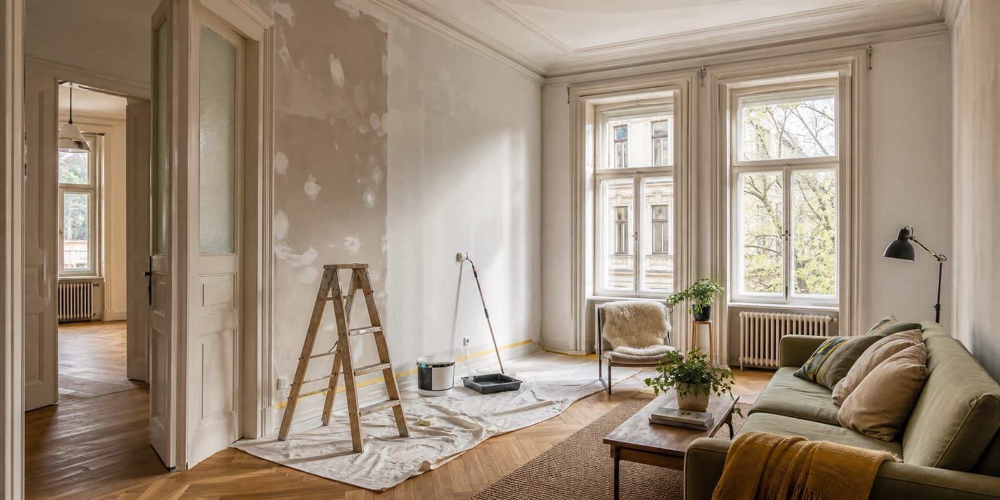
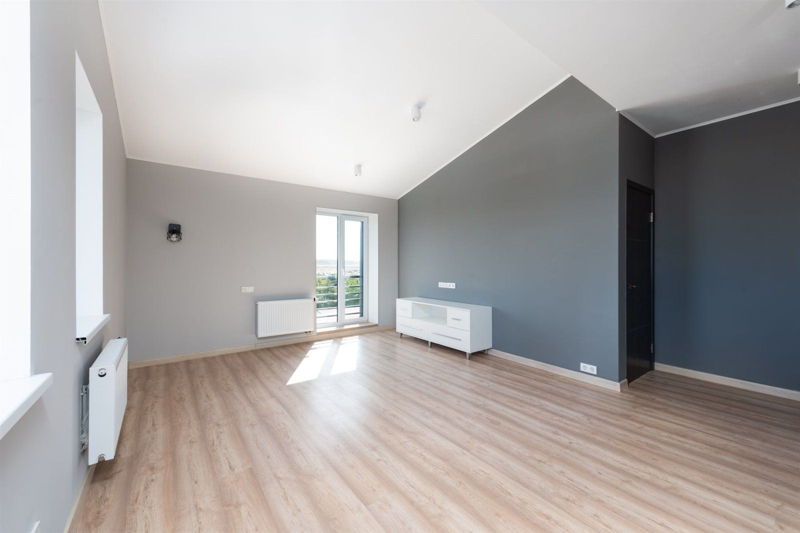
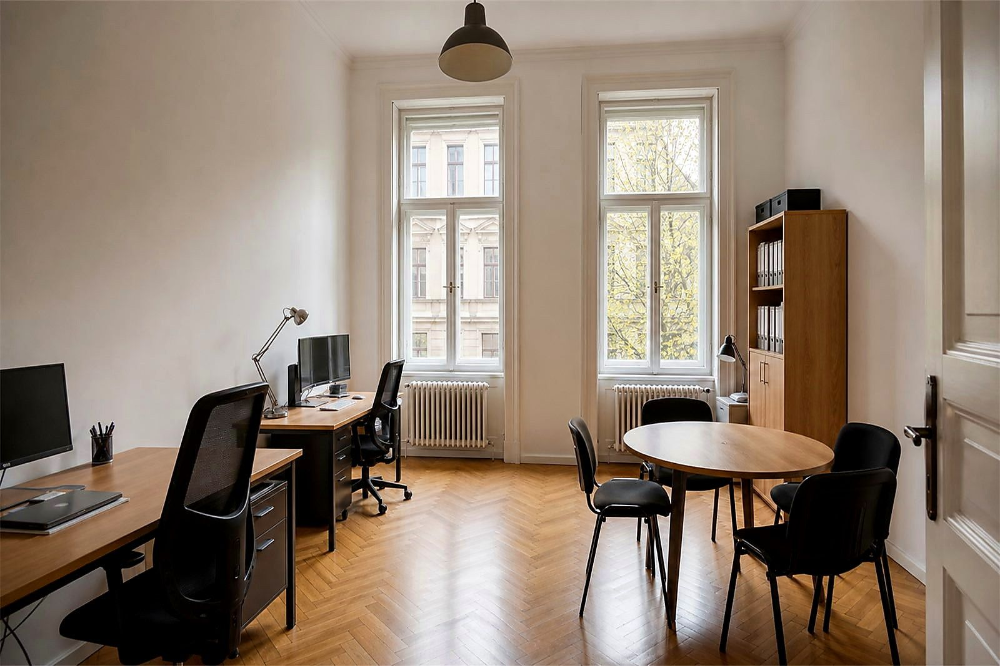

Magyar és angol egyeztetés tulajdonosokkal, expatokkal, Airbnb-házigazdákkal és helyszíni kapcsolattartókkal.
Ingatlantámogatás külföldi tulajdonosoknak Budapesten
Ingatlankezelési támogatás Budapesten külföldi tulajdonosoknak.
Praktikus, távolról is követhető ingatlantámogatás befektetőknek, külföldön élő tulajdonosoknak, expatoknak, Airbnb-tulajdonosoknak és időszakosan használt lakások gazdáinak. A fókusz: karbantartási koordináció, állapotellenőrzés, javítások szervezése, takarítási egyeztetés, kivitelezői koordináció és fotós visszajelzés. Nem jogi, adózási, pénzügyi vagy teljes körű bérbeadási ingatlankezelés.

Távolról is követhető
Feladatlista, fotók, jóváhagyási pontok.
Kérés szerint fotók az ellenőrzésről, javításokról, takarításról és átadásra kész állapotról.
Budapesti lakások, rövid távú kiadás, befektetési lakások és időszakosan használt otthonok gyakorlati igényeire.
Az oldalon szereplő képek illusztrációk, amelyek tipikus munkafolyamatokat és várható eredményeket mutatnak.
01
Miben segítünk külföldi tulajdonosoknak?
Ha az ingatlan Budapesten van, de a tulajdonos máshol él, a legnagyobb kihívás gyakran nem egyetlen javítás, hanem a koordináció. Valakinek át kell látnia az állapotot, fotókat kell küldenie, sorrendet kell javasolnia, hozzáférést kell szerveznie, és külön kell választania, mi sürgős karbantartás, mi takarítás, mi festés, és mi igényel külön szakembert.
Állapotellenőrzések
Látható hibák, falnyomok, beázásgyanú, elhasználódott részletek, udvari vagy közös területi problémák áttekintése, fotós visszajelzéssel.
Javítások szervezése
Kisebb javítások, ezermester feladatok, faljavítás, festési frissítés és praktikus karbantartási tételek érthető feladatlistába rendezve.
Takarítási koordináció
Költözés, vendégérkezés, felújítás vagy hosszabb üres állapot után a szükséges takarítási szint és határidő külön egyeztethető.
Kivitelezői koordináció
Ha külső szakemberre van szükség, a hozzáférés, helyszíni információ, fotók és jóváhagyási pontok rendezése segíthet elkerülni a félreértést.
Fotós visszajelzés
A fotók segíthetnek megérteni a kiinduló állapotot, a munka előrehaladását és a kész eredményt, különösen távollévő tulajdonosnál.
Átlátható döntési pontok
Ha a munka közben új tétel merül fel, azt külön egyeztetjük. A cél nem feltételezés, hanem követhető tulajdonosi döntés.
02
Kinek ideális ez a szolgáltatás?
Ez a szolgáltatás azoknak készült, akiknek van budapesti ingatlanuk, de nincs idejük vagy lehetőségük minden kisebb karbantartási és előkészítési kérdést személyesen intézni. A cél a rendezett, dokumentált, ésszerűen koordinált folyamat.
- Külföldi tulajdonosokAkik szeretnék látni, mi történik az ingatlanban, mielőtt jóváhagynak egy javítást vagy takarítást.
- Befektetők és távollévő bérbeadókAkiknek fontos, hogy a lakás ne romoljon le csendben két bérlő, vendég vagy tulajdonosi látogatás között.
- Airbnb- és rövid távú kiadókAkiknél a vendégkész állapot, gyors javítás, takarítási koordináció és fotós visszajelzés közvetlenül számít.
- Expatek és időszakos otthontulajdonosokAkik nem mindig tartózkodnak Budapesten, de szeretnék, hogy az ingatlan használható és rendezett maradjon.



A képek illusztratívak, nem konkrét ügyfélprojektek. Azt mutatják, milyen jellegű budapesti ingatlanhelyzeteknél hasznos a szervezett karbantartási háttér.
03
Lépésről lépésre
A folyamat lényege, hogy a tulajdonos ne találgatásokból döntsön. Először összegyűjtjük az információt, majd a látható feladatokat prioritás szerint rendezzük.
Első üzenet
Küldjön fotókat, címet vagy kerületet, hozzáférési információt, határidőt és rövid célt.
Állapot és prioritás
Tisztázzuk, mi sürgős, mi várhat, és mihez kell helyszíni pontosítás vagy külön szakember.
Koordinált munka
A javítás, takarítás vagy kivitelezői egyeztetés az elfogadott feladatlista szerint halad.
Fotós visszajelzés
Kérés szerint fotók mutatják, mi történt, mi készült el, és mi lehet a következő ésszerű lépés.
04
Mit tartalmaz a külföldi tulajdonosi támogatás?
A szolgáltatás nem egy sablonos ingatlankezelési csomag, hanem gyakorlati koordináció olyan helyzetekre, amikor a tulajdonos nincs a helyszínen. A cél az, hogy a látható állapot, a sürgősség, a következő lépés és a jóváhagyási pontok érthetőek legyenek, mielőtt javítás, takarítás vagy kivitelezői egyeztetés indul.
Külföldön élő bérbeadóknál, befektetőknél és időszakosan Budapestre érkező tulajdonosoknál gyakran az apró, de halmozódó teendők okoznak gondot: egy meglazult kilincs, falnyomok a nappaliban, vendég utáni takarítás, kert vagy udvar rendbetétele, illetve egy bizonytalan kivitelezői kérdés. Ezeket nem érdemes külön-külön kapkodva kezelni. Jobb, ha a feladatok egy átlátható sorrendbe kerülnek, a tulajdonos pedig fotók és rövid magyarázat alapján tud dönteni. Így a kommunikáció rövidebb, a felelősségi kör tisztább, és kevesebb az utólagos félreértés. A végeredmény nyugodtabb, tervezhetőbb folyamat.
Hozzáférés és helyszíni információ
A legtöbb munka akkor indul jól, ha előre tiszta, ki tud bejutni, mikor elérhető az ingatlan, hol vannak a kulcsok, és milyen szabályok vonatkoznak a házra vagy irodára. Ezeket az információkat rendezett formában kezeljük, hogy a javítás vagy ellenőrzés ne az ajtó előtt akadjon el.
Feladatlista és döntési pontok
A fotók, rövid leírás és helyszíni visszajelzés alapján a teendők külön listába kerülnek: mi karbantartás, mi takarítás, mi festés vagy faljavítás, és mi igényel külön szakembert. Ez segít elkerülni, hogy több apró probléma összefolyjon egy átláthatatlan munkává.
Javítás, takarítás és kivitelezői egyeztetés
Ha a feladat javítást, takarítást vagy külső kivitelezőt érint, a cél az, hogy a munka tárgya, időzítése és átadási pontja érthető legyen. Nem vállalunk minden szakági munkát saját kivitelezésben, de segíthetünk abban, hogy a megfelelő lépés, információ és fotós visszajelzés ne vesszen el.
Fotók és tulajdonosi követhetőség
Kérés szerint fotók készülhetnek a kiinduló állapotról, a látható hibákról, a fontosabb munkafázisokról és az elkészült állapotról. Ez különösen hasznos külföldön élő tulajdonosoknak, mert nem kell minden apró döntéshez Budapestre utazniuk, mégis követhető marad, mi történik az ingatlanban.
05
Karbantartási koordináció vagy teljes körű ingatlankezelés?
A „property management” kifejezés sok mindent jelenthet, ezért fontos pontosan elválasztani a gyakorlati budapesti helyszíni támogatást a jogi, bérbeadási és pénzügyi kezeléstől. A Budapest Property Services ebben a szolgáltatásban a karbantartási koordinációra, ellenőrzésekre, kisebb javításokra, takarítási egyeztetésre, hozzáférésre és fotós visszajelzésre koncentrál.
Amit ez a támogatás lefedhet
Állapotellenőrzés üres lakás után, bérlő vagy vendég érkezése előtti előkészítés, bérlő által jelzett karbantartási probléma tisztázása, kisebb javítások, takarítási egyeztetés, hozzáférés szervezése és fotós összefoglaló.
Ami nem része ennek a szolgáltatásnak
Nem vállalunk bérleti szerződéskezelést, bérleti díj beszedést, adózási adminisztrációt, jogi képviseletet, bérlőszűrést, foglaláskezelést, ároptimalizálást, biztosítási ügyintézést vagy hatósági megfelelőség-kezelést. Szabályozott vagy szakági munka esetén megfelelő képesítésű szakemberre lehet szükség.
Tipikus távoli tulajdonosi helyzetek
A tulajdonos külföldön él, a lakás üresen maradt, a bérlő hibát jelent, a takarítás közben fal- vagy szerelvényhiba derül ki, vagy a következő vendég előtt gyorsan tisztázni kell egy javítási tételt. Ilyenkor a cél a látható állapot és a következő lépés tiszta dokumentálása.
Kapcsolódó karbantartási irányok
A feladat gyakran kapcsolódhat általános ingatlankarbantartáshoz, festéshez és faljavításhoz, Airbnb karbantartáshoz vagy udvar esetén kertfenntartáshoz. Ezeket külön szolgáltatási irányként kezeljük, hogy a munkatartalom ne mosódjon össze.
06
Árazási filozófia: nincs félrevezető fix ár
Külföldi tulajdonosoknál gyakori, hogy a feladat elsőre egyszerűnek tűnik, de a hozzáférés, a sürgősség, az ingatlan állapota, a szükséges szakember és a takarítási vagy javítási mélység teljesen megváltoztatja a munkát. Ezért nem teszünk ki olyan fix árakat, amelyek egy valós budapesti lakáshelyzetben könnyen félrevezetők lennének. Először fotók, leírás, határidő és hozzáférés alapján tisztázzuk a reális következő lépést.
Nem teljes körű bérbeadási kezelés
Nem kezelünk jogi szerződéseket, adózást, könyvelést vagy bérleti díj beszedést. A szolgáltatás karbantartási és koordinációs támogatás.
Átlátható munkatartalom
A javítás, takarítás, ellenőrzés és kivitelezői egyeztetés külön feladatként látható, hogy ne keveredjenek a döntések.
Reális következő lépés
A cél nem túlígérés, hanem annak eldöntése, hogy fotók alapján indulhat-e a munka, vagy helyszíni ellenőrzés kell.
07
Gyakori kérdések külföldi tulajdonosoktól
Gyakorlati válaszok arról, mit jelent az ingatlankezelési támogatás ebben a pontosan körülhatárolt szolgáltatási körben.
Vállalnak ingatlankezelési támogatást külföldi tulajdonosoknak?
Igen, de pontosan meghatározott körben: karbantartási koordináció, állapotellenőrzés, javítások szervezése, takarítási egyeztetés, kivitelezői koordináció és fotós visszajelzés.
Ez teljes körű ingatlankezelés?
Nem. Nem tartalmaz jogi, adózási, könyvelési, szerződéses vagy bérleti díj beszedési feladatokat. A szolgáltatás a gyakorlati karbantartási és szervezési háttérre fókuszál.
Lehet mindent külföldről intézni?
Sok gyakorlati feladat igen, ha a hozzáférés, döntési jog és fizikai belépés megoldott. Rejtett hibáknál vagy nagyobb munkáknál helyszíni ellenőrzés lehet szükséges.
Végeznek állapotellenőrzést?
Igen, látható állapot, karbantartási igények és következő lépések szempontjából. Ez nem műszaki szakvélemény vagy jogi átvilágítás.
Tudnak javításokat szervezni?
Igen. Kisebb javítások, festési frissítés, faljavítás, ezermester feladatok és karbantartási tételek feladatlistába rendezhetők.
Takarítást is koordinálnak?
Igen, ha a kívánt átadási állapot, határidő és hozzáférés tiszta. A takarítást és javítást külön feladatként kezeljük.
Küldenek fotós visszajelzést?
Kérés szerint igen. A fotók a döntést és a távoli követést segítik, különösen távollévő tulajdonosnál.
Airbnb tulajdonosoknak is hasznos?
Igen. Vendégváltások között hasznos lehet a javítás, falfrissítés, takarítási koordináció és fotós dokumentáció.
Dolgoznak meglévő kivitelezővel?
Megbeszélés alapján igen, ha a felelősségek, hozzáférés, jóváhagyási pontok és kommunikációs keretek előre tiszták.
Van fix díj?
Nincs általános fix ár, mert minden ingatlan, hozzáférés, határidő és feladatlista más. A reális munkatartalmat először tisztázni kell.
Segítenek új bérlő érkezése előtt?
Igen, gyakorlati előkészítési körben: látható állapot ellenőrzése, kisebb javítások listázása, takarítási igény tisztázása, falnyomok vagy szerelvényhibák jelzése és fotós visszajelzés. Ez nem bérleti szerződéses vagy átadás-átvételi jogi szolgáltatás.
Mi történik bérlő kiköltözése után?
Kérés szerint a lakás látható állapota áttekinthető, fotók készülhetnek, és külön listába kerülhet, mi takarítás, mi kisebb javítás, mi festés vagy faljavítás, illetve mi igényel külön szakembert.
Hogyan működik a hozzáférés és kulcskezelés?
A hozzáférést előre kell tisztázni: ki tud beengedni, hol vannak a kulcsok, mikor elérhető a lakás, és van-e házirend vagy portaszolgálati szabály. Kulcsátadás csak előre egyeztetett, biztonságos keretek között történhet.
Kapcsolatba lépnek a bérlővel?
Gyakorlati időpont- vagy bejutási egyeztetés megbeszélés alapján lehetséges, ha a tulajdonos erre egyértelmű felhatalmazást ad. Nem végzünk bérlőkezelést, jogi kommunikációt, követeléskezelést vagy szerződéses adminisztrációt.
Mi történik, ha helyszínen több munka derül ki?
Az új tételt külön jelezzük, lehetőség szerint fotóval és rövid magyarázattal. A cél, hogy a tulajdonos értse, mi sürgős, mi várhat, és mi igényel külön jóváhagyást vagy szakkivitelezőt.
Tudnak sürgős kérésekkel segíteni?
Sürgős helyzetnél a kapacitás, hozzáférés, munka mérete és anyag- vagy szakemberigény dönt. Gyors egyeztetésre törekszünk, de nem vállalunk 24/7 vészhelyzeti rendelkezésre állási garanciát.
Mit küldjek elsőként?
Küldjön fotókat, címet vagy kerületet, hozzáférést, határidőt, és írja le, hogy karbantartás, takarítás, javítás vagy ellenőrzés a fő cél.
Lehet angolul egyeztetni?
Igen. A feladatok magyarul vagy angolul is egyeztethetők, ami külföldi tulajdonosoknál és expatoknál különösen fontos.
Következő lépés
Küldjön néhány fotót az ingatlanról, és egyeztessük, milyen támogatásra van szükség.
A legjobb kezdés: 3-5 fotó, budapesti cím vagy kerület, hozzáférési információ, határidő, az ingatlan használati módja és a fő cél. Írja meg, hogy állapotellenőrzés, karbantartás, javítás, takarítás vagy kivitelezői egyeztetés miatt keres bennünket.
3-5 fotóBudapesti címHozzáférésFő cél
+36 20 667 1832contactcreativefabrication@gmail.com
WhatsApp üzenet küldése
Telefonszám másolásaEmail küldésecontactcreativefabrication@gmail.com
Elsődleges terület: Budapest és közvetlen környéke. Magyar és angol egyeztetés.
08
Kapcsolódó szolgáltatások
Ha pontosabb szolgáltatási irányt keres, ezek az oldalak segítenek a következő lépés kiválasztásában.
Ingatlankarbantartás
Általános javítási és karbantartási háttér budapesti ingatlanokhoz.
Airbnb karbantartás
Vendégkész állapot, javítások, takarítási egyeztetés és fotók.
Takarítás
Lakás, Airbnb, iroda, költözés utáni és felújítás utáni takarítás.
Festés és faljavítás
Falnyomok, repedések, glettelés és lakásfrissítés.
Ezermester
Kisebb szerelési és javítási feladatok egy listában.
Kertfenntartás
Udvar, kert, bejárat és kültéri megjelenés rendezése.